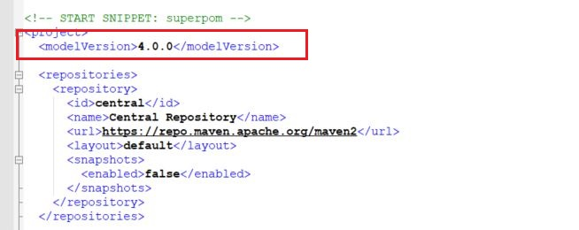

ΔΩΡΕΑΝ ΜΑΘΗΜΑΤΑ APACHE MAVEN
Στην σημερινή δωρεάν Apache Maven ενότητα, θα ολοκληρώσουμε την αναφορά μας στο Apache
Maven Lifecycle και Goals. Έχουμε πολλά και ενδιαφέροντα θέματα να συζητήσουμε
τα οποία είμαι σίγουρος ότι θα διευρύνουν τις γνώσεις σας όσον αφορά την λειτουργία
και την καλύτερη κατανόηση του Apache Maven.
Μέχρι τώρα, δεχτήκαμε το γεγονός ότι η προκαθορισμένη συμπεριφορά του Apache
Maven, αν εμείς δεν επιλέξουμε τι είδος τελικού πακέτου προτιμάμε, είναι να
δημιουργήσει ένα jar αρχείο και να μας διαθέσει ένα Lifecycle για την διαχείριση
του. Αυτό όμως που δεν έχουμε απαντήσει ακόμα είναι από που έρχονται αυτές οι
προκαθορισμένες επιλογές?
Όπως στις γλώσσες προγραμματισμού, έτσι και στο Apache Maven χρησιμοποιείται
η έννοια της κληρονομικότητας. Στην ουσία, κάθε POM που δημιουργούμε για
την ανάγκη του εκάστοτε project κληρονομεί τις βασικές λειτουργίες και υπηρεσίες
που θα προσφέρει από ένα κεντρικό POM το οποίο ονομάζεται super POM. Μπορούμε να
αντικαταστήσουμε ή ακόμα και να προσθέσουμε επιπλέον υπηρεσίες σε αυτές που έχουν
ήδη κληρονομηθεί. Το τελικό αποτέλεσμα είναι να ελαχιστοποιήσουμε τον χρόνο που
χρειάζεται να δημιουργηθεί το POM του δικού μας project αφού αυτό που έχουμε
μόνο να κάνουμε είναι να προσθέσουμε, να αλλάξουμε ή απλά να δεχτούμε τις υπηρεσίες
που ήδη υπάρχουν. Αυτή την λογική την έχουμε δει ήδη στην προηγούμενη ενότητα
όταν είχαμε στην διάθεση μας ένα ολόκληρο Lifecycle με τα phases και goal ήδη
προκαθορισμένα για μας και εμείς απλά επιλέξαμε να τρέξουμε το clean και
το install για να δημιουργήσουμε ένα τελικό jar του project μας.
Για να δούμε τι ακριβώς περιέχει το super POM, από το οποίο κληρονομεί τις λειτουργίες
του το δικό μας POM, εκτελούμε την εξής εντολή:
mvn help:effective-pom
Το αποτέλεσμα στην οθόνη θα είναι αρκετά μεγάλο, οπότε η εικόνα δείχνει απλά ένα
μέρος του αποτελέσματος. Όμως που ακριβώς βρίσκεται αυτό το αρχείο?
Εάν δεν το γνωρίζεται, το jar αρχείο που παράγεται από το Maven αλλά και κάθε jar αρχείο
δεν είναι τίποτα περισσότερο από ένα συμπιεσμένο αρχείο (κάτι παρόμοιο με το zip αρχείο).
Αυτό σημαίνει ότι αν κάνουμε δεξί κλικ επάνω σε ένα jar αρχείο μπορούμε να το αποσυμπιέσουμε
(unzip) και να δούμε τι περιέχει μέσα. Πηγαίνουμε λοιπόν στο φάκελο στον οποίο είχαμε
εγκαταστήσει το maven και βρίσκουμε τον φάκελοlib. Μέσα στο lib υπάρχουν δύο jar που
πρέπει να κάνετε unzip – το maven-core-3.6.3.jar και το maven-model-builder-3.6.3.jar.
Αφού τα
αποσυμπιέσετε, θα πρέπει να έχετε δύο φακέλους δημιουργημένους με τα ίδια ονόματα.
Στον φάκελο maven-model-builder-3.6.3 πηγαίνουμε στο org → apache → maven → model
και ανοίγουμε το αρχείο POM-4.0.0
Σε αυτό το αρχείο παίρνουμε αρκετές και χρήσιμες πληροφορίες όπως ποια είναι τα
repositories από τα οποία το Apache Maven κατεβάζει τις βιβλιοθήκες αλλά και την δομή
που ακολουθεί κατά την δημιουργία του project και την τοποθεσία των φακέλων. Επίσης
παρατηρήστε ότι στην αρχή του αρχείου είναι δηλωμένο το version του POM
το οποίο είναι 4.0.0.

Είναι αυτό ακριβώς το αρχείο και έκδοση που ψάχνει το δικό μας POM.
Τώρα, αν πάμε στο φάκελο maven-core-3.6.3 και μετά META-INF→ plexus
θα βρούμε δύο αρχεία: το components.xml και το default-bindings.xml.
Αν ανοίξουμε το components.xml θα δούμε όλα τα phases που είναι διαθέσιμα
για το default Lifecycle του Maven.
Ενώ αν ανοίξουμε το default-bindings.xml αρχείο θα βρούμε αυτό
που ακριβώς ψάχνουμε – ποια είναι τα phases και κατά συνέπεια τα goal για κάθε
μία από τις επιλογές πακέτων που θέλουμε να δημιουργήσουμε. Στο δικό μας παράδειγμα,
έχουμε δημιουργήσει ένα java maven project το οποίο παράγει ένα jar αρχείο.
Αυτό το Lifecycle μπορούμε να το δούμε πως ορίζεται ακριβώς μέσα στο default-bindings.xml.
Δεν χρειάζεται να μπούμε σε περισσότερες λεπτομέρειες, όμως είναι εμφανές το
γεγονός ότι όλη την προκαθορισμένη συμπεριφορά του το Maven την λαμβάνει από xml
αρχεία που βρίσκονται μέσα στις βιβλιοθήκες του. Αυτό θα ισχύει και αργότερα όταν
μιλήσουμε και για άλλα χαρακτηριστικά και ιδιότητες του Apache Maven.
Πριν κλείσουμε αυτή την ενότητα, θα ήθελα να αναφερθούμε και στο local repository.
Αν θυμάστε σε προηγούμενη ενότητα, είχαμε αναφέρει το γεγονός ότι την πρώτη φορά που
θα κάνουμε install ένα Java Maven project, θα κατεβούν από εξωτερικά repositories
(τα είδαμε στο super POM αρχείο) όλες οι βιβλιοθήκες που χρειάζεται το project για
να τρέξει σωστά. Αυτές οι βιβλιοθήκες ή jar σώζονται όλα τοπικά στον σκληρό μας δίσκο.
Εξ ορισμού είναι μέσα στο αρχείο .m2 αλλά στον δικό μου υπολογιστή το είχα ρυθμίσει να
είναι στο D: drive λόγω περιορισμένου χώρου. Μέχρι εδώ είναι θεωρία που ήδη έχουμε πει.
Αλλά όμως τώρα θα καταλάβετε γιατί δώσαμε ένα groupId και ένα artifact στον ορισμό του
POM του project μας.
Στο δικό μας παράδειγμα έχουμε ορίσει τα εξής:
Αν πάμε στο repository που υπάρχει τοπικά στον υπολογιστή μας, θα δούμε ότι έχουν δημιουργηθεί
οι φάκελοι com → mycompany (groupId), ένα αρχείο με το όνομα HelloMaven
(artifact) και το version του κώδικα (1.0-SNAPSHOT).
Οπότε, ενώ έχουμε στον target φάκελο ένα jar με το όνομα του project μας (που βασικά
είναι αυτό που θα εκτελέσουμε), ταυτόχρονα υπάρχει και ένα αντίγραφο στο repository
που έχει οριστεί τοπικά στον υπολογιστή μας.
Πίσω στις ενότητες Apache Maven
Michail Kassapoglou Admin
Γεια σας, είμαι ο Μιχάλης Κασάπογλου και θα σας διδάξω με τον ποιο απλό
τρόπο να χρησιμοποιείτε το Apache Maven για την δημιουργία όλων των Java και Java EE project σας. Ασχολούμαι με την τεχνική εκπαίδευση
σε διάφορες πλατφόρμες, λειτουργικά συστήματα και γλώσσες προγραμματισμού
πάνω από 20 έτη. Κατέχω έναν αρκετά μεγάλο αριθμό πιστοποιήσεων Microsoft και Oracle
και σαν Τraining Lead στην Intrasoft έχω την δυνατότητα να αναβαθμίζω συνεχώς
τις γνώσεις μου και να έχω άμεση επαφή με αληθινά projects και εξειδικευμένες μεθόδους
ανάπτυξης εφαρμογών που έχουν υψηλές απαιτήσεις.
Για τυχόν ερωτήσεις σας μπορείτε να επικοινωνήσετε μαζί μου
στο Michail.Kassapoglou@gmail.com
Σας ευχαριστώ που επισκεφτήκατε την ιστοσελίδα μου.